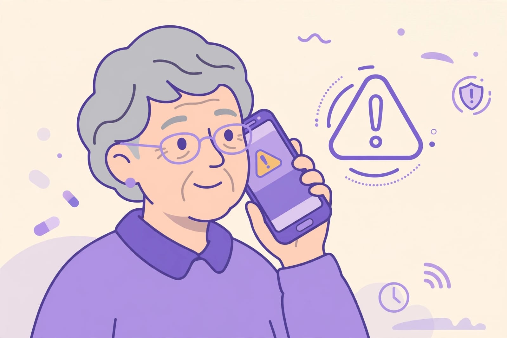
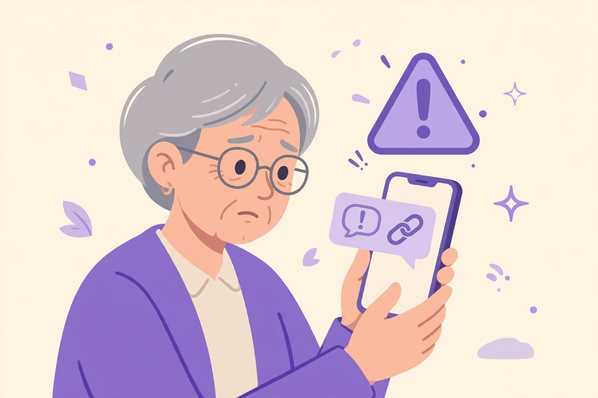
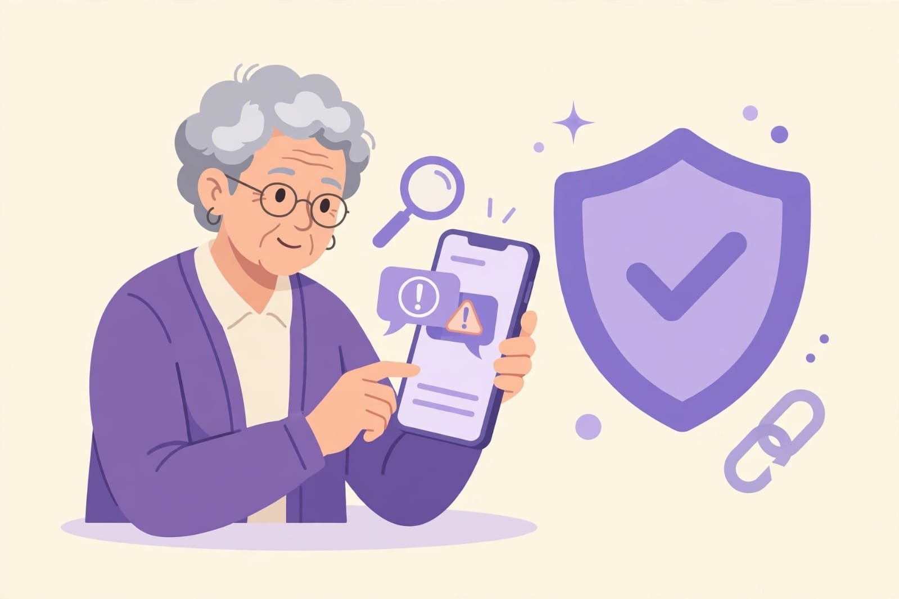
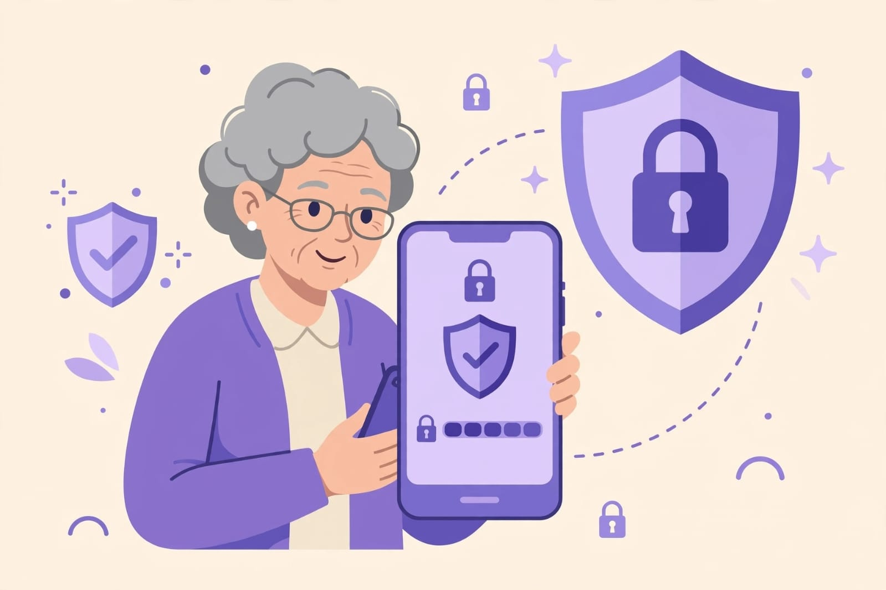

Online Safety
Learn simple ways to stay safe while using your phone and the internet.

1. Be Careful With Fake Calls
Do not trust callers who ask for your OTP, UPI PIN, password or bank details. End the call and verify the information using an official source.

2. Avoid Unknown Links
Do not click suspicious links received through messages or email. Check the sender and website before providing any information.

3. Watch Out for Online Scams
Be careful with messages offering unexpected prizes, refunds or urgent requests for money. Verify before taking any action.

4. Keep Passwords Safe
Use strong passwords and keep them private. Never share your password, OTP or PIN with anyone.